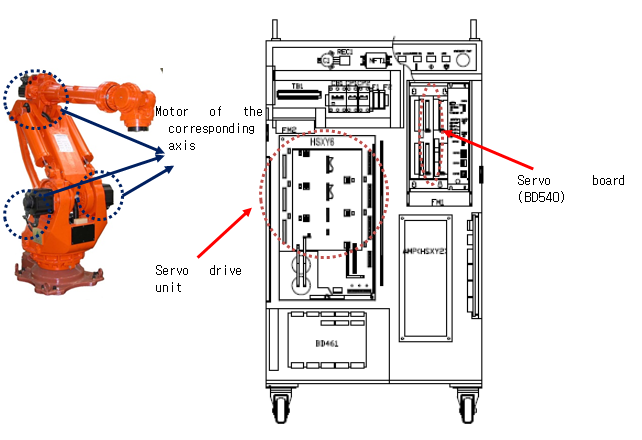

1.1.20.1. Outline
Position (speed) deviation exceeds the set value. If the difference between the location of the moving command and the actual location is too large during the operation of the robot that is controlled by the Servo, the Servo board will detect an error (during Servo operation) and immobilize the robot.
1.1.20.2. Causes and checking methods
1. Check if the axis with an error has mechanical interference with other equipment.
This error may occur if the robot had a mechanical interference or collisions. If the robot is out of the operation area, please move it back into the operation area by using a manual control.
2. Check if the brake release works properly.
The brake release functions of the corresponding axis may have an error or the release voltage of the brake release may have a problem.
1) Examine if the brake release of each axis has an error.
Please remove the motor¡¯s power supply (motor off), and check if you can release the brake of the axis with a manual brake switch. You can confirm it with the sound of the brake release from the motor.
3. Examine the wiring status.
Check if the motor wiring (U, V, and W phases) has been short-circuit from the other wiring or ground lines (FG).
4. Check if the rated load is used.
If the total weight exceeds the rated load, please refer to the Robot¡¯s specification and adjust the load to within the rated load.
5. Position deviation setting level error
If the position deviation setting value is smaller than the next maximum measured value, please increase the setting value.
The maximum measured value of the position deviation after few cycles of operation is ¡¿1.5.
6. Replace other components.
Replace the component of the Servo board (BD540/1) ¡æ Servo drive unit ¡æ Motor to confirm the occurrence of an error.
